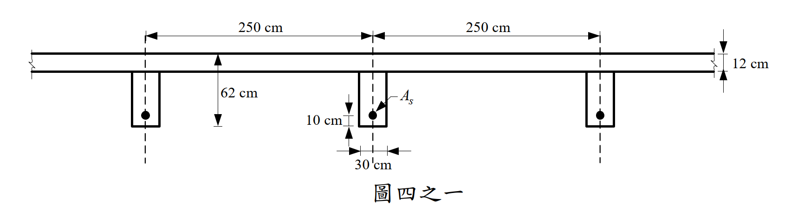
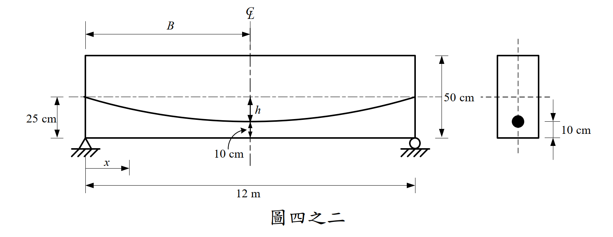
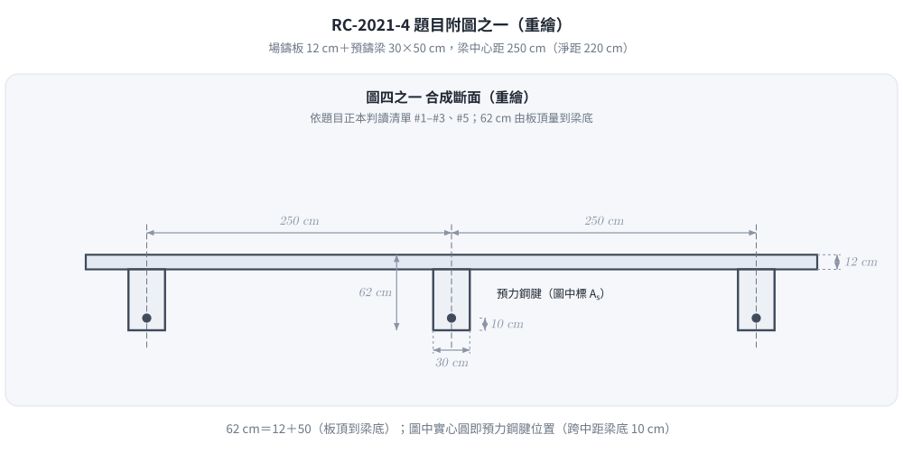
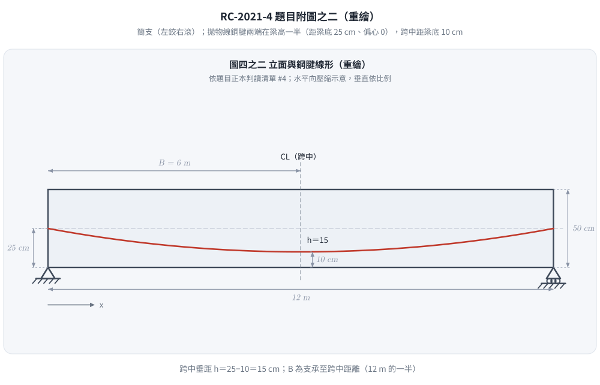
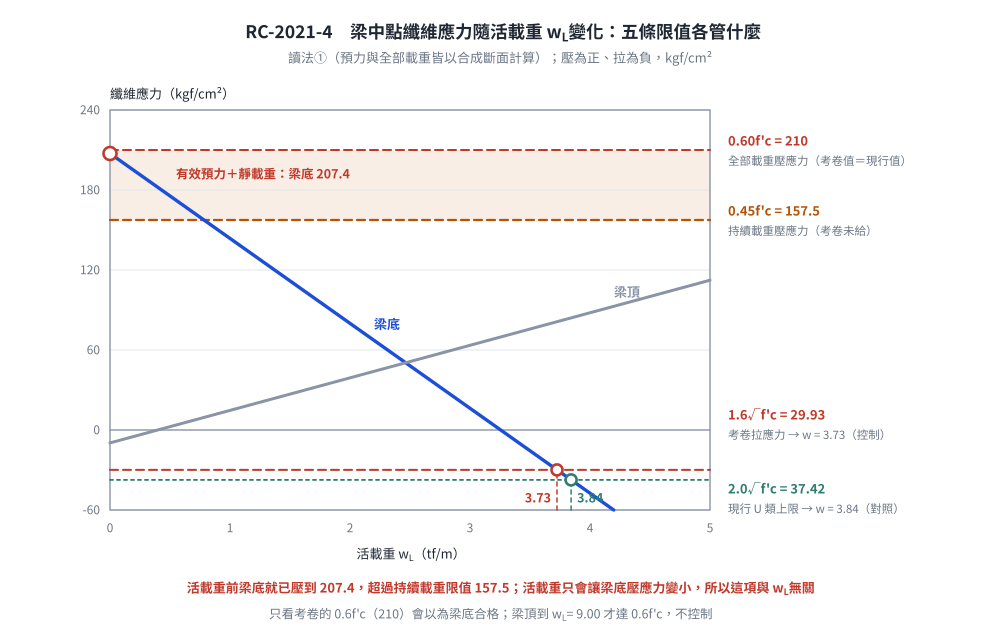

📄 題目正本：考卷原文・附圖・判讀清單（已確認）
RC-2021-4 題目正本
本檔只記錄考卷上寫了什麼、圖上畫了什麼，不含任何解法。解析見同資料夾
RC-2021-4.md。
判讀清單已經使用者確認（凍結）；本檔原則上不再修改（改動須回考卷原圖並記 log）。
| 項目 | 內容 |
|---|---|
| 考卷 | raw/exams/RC-2021_鋼筋混凝土設計與預力.pdf 第 4 頁，第四題；作答規範見第 1 頁 |
| 考年 | 民國 110 年（2021） |
| 配分 | 25 分 |
| 附圖 | RC-2021-4-fig-1.png（圖四之一：合成斷面）、RC-2021-4-fig-2.png（圖四之二：立面與鋼腱線形） |
| 判讀狀態 | 已確認（2026-11-14 使用者確認；影響答案項目使用者選擇：#7 讀法①——預力與全部載重皆以合成斷面計算；轉錄 2026-11-14；PyMuPDF 110 dpi 全頁目視＋抽出文字核對，附圖讀 PDF 繪圖座標；盲讀後才比對既有解析） |
1. 考卷原文（逐字）
四、圖四之一簡支梁結構由後拉法預鑄預力矩形梁與場鑄板組合而成，梁與板間設置足夠之剪力筋連結，梁跨度 12 m，矩形梁斷面 30 cm × 50 cm，每支預力梁間之中心距離為 250 cm，預力鋼腱採拋物線配置如圖四之二所示，場鑄板之厚度為 12 cm。預力梁與場鑄板混凝土均採 $f'_c = 350\ \mathrm{kgf/cm^2}$，容許壓應力為 $0.6f'_c$，容許拉應力為 $1.6\sqrt{f'_c}$。每支梁施預力時之油壓預力 $F_i = 300$ tf，梁中點處之有效預力 $F_e = 0.7F_i$。假設簡支梁之靜載重（含自重）為 1.6 tf/m，試計算該簡支梁可承載之最大均布活載重，計算斷面性質時可忽略預力鋼腱之貢獻。（25 分）
[提示] T 型梁翼板之有效板寬不得超過該梁跨度之 1/4；梁腹每側懸出之有效翼板寬度不得超過翼板厚之 8 倍或該梁與鄰梁間淨距之 1/2。
2. 考卷給的公式、附表與參數
- 題文數值：跨度 12 m；預鑄梁 $30 \times 50$ cm；梁中心距 250 cm；場鑄板厚 12 cm；梁、板 $f'_c=350$；容許壓應力 $0.6f'_c$、容許拉應力 $1.6\sqrt{f'_c}$（未註明適用階段）；$F_i=300$ tf、跨中 $F_e=0.7F_i$；靜載重（含自重）1.6 tf/m。
- 提示：有效翼寬三項限制（跨度 1/4、每側 8 倍板厚、每側淨距 1/2），照錄如上。
- 第 1 頁作答規範：依據內政部於民國 110 年 3 月 2 日公布之「混凝土結構設計規範」或中國土木水利工程學會「混凝土工程設計規範與解說（土木 401-100）」作答，未依上述規範作答，不予計分。
- 沒有給：靜載重中哪些由預鑄梁單獨承受、哪些由合成斷面承受（施工支撐）；施預力（transfer）階段是否要檢核；容許拉應力適用的階段。
- 卷首注意事項：可以使用電子計算器。不必抄題，作答時請將試題題號及答案依照順序寫在試卷上，於本試題上作答者，不予計分。本科目除專門名詞或數理公式外，應使用本國文字作答。
3. 附圖


圖面文字照錄：圖四之一 250 cm、250 cm、12 cm、62 cm、10 cm、A_s、30 cm、圖四之一；圖四之二 B、C̸L（中心線）、25 cm、h、50 cm、10 cm（跨中）、10 cm（斷面）、x、12 m、圖四之二。
4. 判讀清單
「把握」標不確定者請優先確認；解讀類項目（題目用字的意思）另標「解讀」。
| # | 項目 | 判讀 | 圖上／題文依據 | 把握 |
|---|---|---|---|---|
| 1 | 62 cm 的量測基準 | 板頂到梁底 = 12＋50 | 62 cm 尺寸線 x≈177.7，由 y＝335.0（板頂）到 y＝384.5（梁底）；板為 335.0–347.4（PDF 座標）；圖未依比例 | 確定 |
| 2 | 預鑄梁 | $30 \times 50$ cm 矩形，置於板下 | 題文、30 cm 尺寸線 | 確定 |
| 3 | 梁距 | 中心距 250 cm → 淨距 220 cm | 250 cm 尺寸線端點對齊三條梁中心虛線（x＝128.8、282.7、436.8） | 確定 |
| 4 | 鋼腱線形 | 拋物線；兩端在梁高一半（距梁底 25 cm，即預鑄梁形心，端部偏心 0）；跨中距梁底 10 cm → 跨中垂距 $h=15$ cm | 圖四之二：25 cm 尺寸線對齊水平虛線與梁底，鋼腱端點落在虛線；跨中 10 cm 尺寸 | 確定 |
| 5 | 圖中 $A_s$ 標記 | 圖四之一的實心圓（標 $A_s$）即預力鋼腱位置，非普通鋼筋 | 與圖四之二斷面圖「10 cm」同位置；題文「計算斷面性質時可忽略預力鋼腱之貢獻」 | 確定（解讀） |
| 6 | 有效預力 | 跨中 $F_e = 0.7 \times 300 = 210$ tf | 題文 | 確定 |
| 7 | 施工階段與載重分配 | 考卷沒有寫預力與靜載重 1.6 tf/m 作用在預鑄梁單獨斷面或合成斷面（題文只說「後拉法預鑄預力矩形梁」「梁與板間設置足夠之剪力筋連結」）。預鑄梁一般在吊裝前施拉，預力作用於預鑄梁斷面 | 題文 | 不確定（影響答案）；使用者確認（選擇見頭表判讀狀態） |
| 8 | 容許應力適用 | 壓 $0.6f'_c$、拉 $1.6\sqrt{f'_c}$ 一組值，梁與板相同 $f'_c$；考卷未分階段 | 題文 | 確定（照考卷原文） |
| 9 | 有效翼寬 | 依提示三項取小（跨度 1/4、每側 8 倍板厚、每側淨距 1/2） | 題文提示 | 確定 |
| 10 | 考卷沒有給 | 施工支撐／載重分階段、施預力階段檢核要求 | 全題 | 確定（作答須自行假設） |
轉錄：2026-11-14（RC-U4-1 題目正本推廣・批 1）
確認：2026-11-14 使用者確認（RC-U4-1 題目正本推廣・批 1，關卡一）
考題編號：RC-2021-4
主分類： RC-U4-1 預力梁斷面應力分析
副分類： 無
設計法： WSD 工作應力法（容許應力設計法）
標籤： 預力T型梁 組合斷面 有效翼板寬 容許壓應力 容許拉應力 最大活載重 服務載重分析 後拉法
1. 題目（考卷原文見題目正本）
考卷原文、公式／附表、附圖與判讀清單（已確認）見
RC-2021-4-problem.md。本節只列解題時最容易讀錯的地方與本解使用的記號；題意以題目正本為準。

重繪自考卷圖四之一，依題目正本判讀清單 #1–#3、#5。62 cm＝12＋50（板頂到梁底）；圖中標 $A_s$ 的實心圓即預力鋼腱。

重繪自考卷圖四之二，依題目正本判讀清單 #4。鋼腱兩端在預鑄梁形心（偏心 0），跨中垂距 $h=15$ cm。
常見誤讀
| 項目 | 正確判讀 | 常見誤讀 |
|---|---|---|
| 62 cm（#1） | 板頂到梁底＝12＋50 | 當成梁深 |
| 梁距（#3） | 中心距 250 cm → 淨距 220 cm（有效翼寬第三項用淨距的一半） | 淨距取 250 |
| 鋼腱線形（#4） | 拋物線，兩端距梁底 25 cm（預鑄梁形心，偏心 0），跨中距梁底 10 cm | 端部也取 10 cm |
| 施工階段（#7） | 依使用者確認採讀法①：預力與全部載重皆以合成斷面計算（考卷未寫施工階段；預鑄梁實務上合成前施拉；讀法②得 3.66、讀法③得 3.01 tf/m，見 wiki/queries/題目正本-RC-U4-1-批1-2026-11-14.md §3） |
未說明採用哪種讀法 |
| 圖中 $A_s$（#5） | 即預力鋼腱位置，不是普通鋼筋 | 另加普通鋼筋 |
本解記號： $F_e=0.7F_i=210$ tf（跨中）；容許壓 $0.6f'_c=210$、容許拉 $1.6\sqrt{f'_c}=29.93$ kgf/cm²（考卷給定，梁板相同；兩者都在現行規範允許範圍內，依根目錄 CLAUDE.md「規範版本」的容許值例外照用，現行規範另有的持續載重檢核見 §5 爭議點 4）；斷面性質忽略鋼腱。
2. 考題核心精神與出題者意圖 (Core Concepts & Examiner's Intent)
核心觀念： 預力組合 T 型梁服務載重分析。先計算有效翼板寬及組合斷面性質，再對各纖維施加容許應力限制，求解最大活載重。
出題者意圖：
- 測驗有效翼板寬的三條件計算
- 考驗 T 型組合斷面形心與慣性矩的計算
- 確認上下纖維均需驗算，找出控制條件（底部拉應力 vs 頂部壓應力）
3. 解題戰略地圖與陷阱分析 (Strategic Roadmap & Trap Analysis)
作戰計畫：
Step 1：計算有效翼板寬 bf（三條件取最小）
Step 2：計算組合 T 型斷面 A、ȳ、I（忽略鋼腱貢獻）
Step 3：計算鋼腱在組合截面的偏心量 e
Step 4：列出中點底纖維（拉力控制）和頂纖維（壓力控制）兩個應力不等式
Step 5：解最大 wL
關鍵陷阱：
| # | 陷阱 | 應對策略 |
|---|---|---|
| ⚠1 | 有效翼板寬需取三條件最小值，且 L/4 是總翼板寬 | 分別計算三者後取 min |
| ⚠2 | 偏心量 $e$ 是從組合截面形心量到鋼腱，不是從預鑄梁形心 | $e = \bar{y}_b - 10 = 44.83 - 10 = 34.83$ cm |
| ⚠3 | 底纖維在大活載重下承受拉力（預力 + DL 的壓縮被 LL 的拉力抵消）→ 通常控制 | 底部拉應力限制給出 $w_L \le 3.73$ tf/m |
| ⚠4 | 頂纖維壓應力限制通常不控制（因翼板很寬，翼板頂壓力不大） | 驗算 $w_L \le 9.00$ tf/m（不控制） |
3.5 變數層次分析 (Variable Hierarchy Analysis)
複習提示：第一次解題後，在每個卡住的知識點旁標記
⚠；第二次複習時只看有⚠的項目。
最終目標
求滿足容許壓應力（$0.6f'_c$）與容許拉應力（$1.6\sqrt{f'_c}$）的最大均布活載重 $w_L$
本題關鍵公式（依計算順序）
$$\text{Step 1：有效翼板寬} \quad \boxed{b_f} = \min\!\left(\frac{L}{4},\; b_w + 2\times8h_f,\; b_w + \text{淨距}\right)$$
$$\text{Step 2：組合斷面} \quad \boxed{A},\;\boxed{\bar{y}_b},\;\boxed{I} \text{ 由 T 型斷面公式計算}$$
$$\text{Step 3：偏心量} \quad \boxed{e} = \boxed{\bar{y}_b} - 10 \text{ cm（鋼腱距組合截面底部）}$$
$$\text{Step 4：底纖維應力} \quad f_{\text{bot}} = \frac{F_e}{A} + \frac{F_e\cdot\boxed{e}\cdot\boxed{\bar{y}_b}}{\boxed{I}} - \frac{(M_D + M_L)\cdot\boxed{\bar{y}_b}}{\boxed{I}} \ge -1.6\sqrt{f'_c}$$
$$\text{Step 5：頂纖維應力} \quad f_{\text{top}} = \frac{F_e}{A} - \frac{F_e\cdot\boxed{e}\cdot c_{\text{top}}}{\boxed{I}} + \frac{(M_D + M_L)\cdot c_{\text{top}}}{\boxed{I}} \le 0.6f'_c$$
$$\text{Step 6：由 Step 4 解} \quad \boxed{w_L} = \frac{\left(f_{\text{bot,ps+DL}} + 1.6\sqrt{f'_c}\right)\cdot\boxed{I}/\boxed{\bar{y}_b}}{L^2/8}$$
L1：題目直接給定
| 符號 | 數值 | 說明 |
|---|---|---|
| $L$ | 12 m | 跨度 |
| $b_w$ | 30 cm | 腹板（預鑄梁）寬 |
| $h_{\text{beam}}$ | 50 cm | 預鑄梁高 |
| $h_f$ | 12 cm | 場鑄板厚 |
| 梁中心距 | 250 cm | 相鄰梁間距 |
| $F_i$ | 300 tf | 初始預力 |
| $F_e$ | $0.7\times300 = 210$ tf | 有效預力（中點） |
| $f'_c$ | 350 kgf/cm² | |
| $W_D$ | 1.6 tf/m | 含自重靜載重 |
| 鋼腱（中點） | 距底 10 cm | 圖四之二 |
L2：需知識點推導
Step 1：有效翼板寬
| 符號 | 公式／來源 | 卡關? |
|---|---|---|
| ① $L/4$ | $1200/4 = 300$ cm（總寬限制） | |
| ② $b_w + 2\times8h_f$ | $30 + 2\times96 = 222$ cm | |
| ③ $b_w + \text{淨距}$ | $30 + (250-30) = 250$ cm | |
| $b_f$ | $\min(300, 222, 250) = 222$ cm |
Step 2–3：組合斷面性質
| 符號 | 公式／來源 | 卡關? |
|---|---|---|
| $A$ | $222\times12 + 30\times50$ | |
| $\bar{y}_b$（形心距底） | $\sum A_i\bar{y}_i / A$ | |
| $c_{\text{top}}$ | $h_{\text{total}} - \bar{y}_b$ | |
| $I$ | Steiner 定理（各分區 $I_0 + A d^2$） | |
| $e$（鋼腱偏心） | $\bar{y}_b - 10$ cm |
Step 4–5：應力不等式 → wL
| 符號 | 公式／來源 | 卡關? |
|---|---|---|
| $M_D$ | $W_D L^2/8 = 1.6\times18 = 28.8$ tf·m | |
| $M_L$ | $w_L\times18$ tf·m（wL 為待求） | |
| 底纖維 $f_{\text{bot}}$ | 三項（Fe/A + 預力彎矩 - 外力彎矩）$\ge -29.93$ kgf/cm² | |
| 頂纖維 $f_{\text{top}}$ | 三項 $\le 210$ kgf/cm² |
L3：深層知識（不懂就卡住）
| 知識點 | 說明 | 卡關? |
|---|---|---|
| 預力梁底纖維在服務載重下 | 預力創造大壓縮（底部 309 kgf/cm²），DL + LL 的彎矩拉力逐漸抵消；活載重越大，底部越趨向拉力，最終到達容許拉應力限制 | |
| 有效翼板寬三條件 | ① L/4（跨度效應）② bw + 2×8hf（翼板剛度效應）③ bw + 淨距（鄰梁限制）；取最小值代表最嚴格的有效壓縮寬度 | |
| 偏心量用組合截面形心 | 服務階段的預力彎矩是 Fe×e，其中 e 相對於組合截面形心計算，而非預鑄梁形心，因為服務階段整個組合斷面共同承力 |
4. 步驟化詳細計算過程 (Step-by-Step Detailed Calculation)
Step 1：有效翼板寬 $b_f$
$$\text{淨距（每側）} = \frac{250-30}{2} = 110 \text{ cm}$$
| 條件 | 計算 | 結果 |
|---|---|---|
| ① $L/4$（總翼板寬限） | $1200/4 = 300$ cm | 300 cm |
| ② $b_w + 2\times8h_f$ | $30 + 2\times8\times12 = 30 + 192$ | 222 cm |
| ③ $b_w + 2\times\min(8h_f,\text{淨距/2})$ | 同上（$8h_f = 96 < 110$，故取 96） | 222 cm |
$$\boxed{b_f = \min(300,\;222,\;250) = \mathbf{222 \text{ cm}}}$$
Step 2：組合 T 型斷面性質
全高： $h_{\text{total}} = 50 + 12 = 62$ cm
各分區（以距底面量測）：
| 分區 | 面積 $A_i$ | 形心 $\bar{y}_i$ | $A_i\bar{y}_i$ |
|---|---|---|---|
| 預鑄梁（30×50） | 1500 cm² | 25 cm | 37,500 cm³ |
| 場鑄板（222×12） | 2664 cm² | 56 cm | 149,184 cm³ |
| 合計 | 4164 cm² | — | 186,684 cm³ |
形心距底面：
$$\bar{y}_b = \frac{186{,}684}{4{,}164} = \mathbf{44.83 \text{ cm}}$$
$$c_{\text{top}} = 62 - 44.83 = \mathbf{17.17 \text{ cm}}$$
慣性矩：
| 分區 | $I_0$ (cm⁴) | $A_i d_i^2$ ($d_i$ = 距複合形心) | $I_i$ (cm⁴) |
|---|---|---|---|
| 梁：$d = 44.83-25 = 19.83$ cm | 312,500 | $1500\times19.83^2 = 589{,}845$ | 902,345 |
| 板：$d = 56-44.83 = 11.17$ cm | 32,016 | $2664\times11.17^2 = 332{,}387$ | 364,403 |
$$\boxed{I = 902{,}345 + 364{,}403 = \mathbf{1{,}266{,}748 \text{ cm}^4}}$$
Step 3：鋼腱偏心量
鋼腱在梁中點距底 10 cm（距組合截面底部 10 cm）：
$$e = \bar{y}_b - 10 = 44.83 - 10 = \mathbf{34.83 \text{ cm（在形心以下）}}$$
Step 4：容許應力
$$f_{c,\text{all}} = 0.6\times350 = 210 \text{ kgf/cm}^2 \text{（壓縮）}$$
$$f_{t,\text{all}} = 1.6\sqrt{350} = 1.6\times18.71 = \mathbf{29.93 \text{ kgf/cm}^2 \text{（拉伸）}}$$
Step 5：服務載重應力（梁中點）
預力貢獻（壓縮正）：
$$\frac{F_e}{A} = \frac{210{,}000}{4{,}164} = 50.43 \text{ kgf/cm}^2$$
$$\frac{F_e\cdot e}{I} = \frac{210{,}000\times34.83}{1{,}266{,}748} = 5.774 \text{ kgf/cm}^2/\text{cm}$$
底纖維預力應力：
$$f_{\text{bot,ps}} = 50.43 + 5.774\times44.83 = 50.43 + 258.9 = \mathbf{309.3 \text{ kgf/cm}^2}$$
頂纖維預力應力：
$$f_{\text{top,ps}} = 50.43 - 5.774\times17.17 = 50.43 - 99.1 = \mathbf{-48.7 \text{ kgf/cm}^2 \text{（拉）}}$$
靜載重 $M_D$（梁中點）：
$$M_D = \frac{1.6\times12^2}{8} = 28.8 \text{ tf·m} = 2{,}880{,}000 \text{ kgf·cm}$$
$$\frac{M_D}{I}\times\bar{y}_b = \frac{2{,}880{,}000\times44.83}{1{,}266{,}748} = \mathbf{101.9 \text{ kgf/cm}^2}$$
$$\frac{M_D}{I}\times c_{\text{top}} = \frac{2{,}880{,}000\times17.17}{1{,}266{,}748} = \mathbf{39.0 \text{ kgf/cm}^2}$$
靜載重後各纖維應力：
$$f_{\text{bot,ps+DL}} = 309.3 - 101.9 = 207.4 \text{ kgf/cm}^2 < 210 \quad\checkmark$$
此處 ✓ 是對考卷容許值 $0.6f'_c$；現行規範另有持續載重 $0.45f'_c=157.5$ 的限值，有效預力＋靜載重屬持續載重，207.4 不符，見 §5 爭議點 4。
$$f_{\text{top,ps+DL}} = -48.7 + 39.0 = -9.7 \text{ kgf/cm}^2 > -29.93 \quad\checkmark$$
Step 6：活載重上限
設 $w_L$（tf/m），則：
$$M_L = \frac{w_L\times12^2}{8} = 18w_L \text{ tf·m} = 1{,}800{,}000w_L \text{ kgf·cm}$$
底纖維（拉力控制）：
$$f_{\text{bot}} = 207.4 - \frac{1{,}800{,}000 w_L\times44.83}{1{,}266{,}748} = 207.4 - 63.70w_L \ge -29.93$$
$$63.70w_L \le 207.4 + 29.93 = 237.33$$
$$\boxed{w_L \le \frac{237.33}{63.70} = \mathbf{3.73 \text{ tf/m}}} \quad\cdots \text{①（控制）}$$
頂纖維（壓力控制）：
$$f_{\text{top}} = -9.7 + \frac{1{,}800{,}000 w_L\times17.17}{1{,}266{,}748} = -9.7 + 24.40w_L \le 210$$
$$24.40w_L \le 219.7$$
$$w_L \le 9.00 \text{ tf/m} \quad\cdots \text{②（不控制）}$$
彙整：
| 條件 | 限制 $w_L$ |
|---|---|
| ① 底纖維拉應力 $\ge -29.93$ kgf/cm² | 3.73 tf/m ← 控制 |
| ② 頂纖維壓應力 $\le 210$ kgf/cm² | 9.00 tf/m |
$$\boxed{w_{L,\max} = \mathbf{3.73 \text{ tf/m}}}$$
5. 關鍵爭議點與進階探討 (Critical Issues & Advanced Discussion)
爭議點 1：預力應力用哪個截面計算？
本題採用組合截面計算服務預力應力（統一使用組合斷面 A、I、ȳ）。嚴格分析應採用「分段施工法」：
- 施工階段（預鑄梁+濕板重）：用預鑄梁斷面（30×50 cm）
- 服務階段（超載重+活載重）：增量應力用組合斷面
此題採統一組合截面為簡化處理，考場常見。
爭議點 2：偏心量為什麼是 34.83 cm？
鋼腱在中點距底 10 cm，但組合截面形心在 44.83 cm 處（比預鑄梁形心 25 cm 高很多，因翼板面積大）。因此偏心量 = 44.83 - 10 = 34.83 cm，遠大於用預鑄梁形心計算的 15 cm。這是本題最容易出錯的地方。
爭議點 3：頂纖維在 DL + LL 下是否可能受拉？
從服務分析：在 $w_L < 0.397$ tf/m 時，頂纖維仍受拉（$f_{\text{top}} < 0$），但拉力很小（最大 9.7 kgf/cm² 在 $w_L = 0$），遠低於容許拉應力 29.93 kgf/cm²，故合理。
爭議點 4：現行規範的容許值對照與持續載重壓應力（2026-11-14 補）
考卷給的容許值在現行建築物混凝土結構設計規範（2023，kgf/cm² 制）下都合規，主線照用：
| 項目 | 考卷 | 現行規範 | 判斷 |
|---|---|---|---|
| 使用階段拉應力 | $1.6\sqrt{f'_c}=29.93$ | U 類上限 $2.0\sqrt{f'_c}=37.42$ | 比 U 類嚴，照用；若取 U 類上限，$w_L=(207.4+37.42)/63.70=3.84$ tf/m |
| 全部載重壓應力 | $0.6f'_c=210$ | $0.60f'_c=210$（有效預力＋全部載重） | 相同 |
| 持續載重壓應力 | （未給） | $0.45f'_c=157.5$（有效預力＋持續載重） | 須另行檢核 |
持續載重檢核： 靜載重（含自重）屬持續載重。有效預力＋靜載重下梁底壓應力
$$f_{\text{bot,ps+DL}} = 207.4 \text{ kgf/cm}^2 > 0.45f'_c = 157.5 \text{ kgf/cm}^2 \quad ✗$$
依讀法①（預力與全部載重以合成斷面計算），本梁在活載重施加前就已超過現行規範的持續載重壓應力限值；考卷只給 $0.6f'_c$ 一組值，所以題目答案仍是 3.73 tf/m，但作答時應註明此點。（加活載重會減少梁底壓應力，故此檢核與 $w_L$ 無關；若採分段施工、預力先作用於預鑄梁斷面，梁底壓應力會更大。）
另：施預力時（$F_i=300$ tf、只有靜載重）讀法①梁底壓應力約 340 kgf/cm²，也超過 $0.60f'_{ci}$（即使 $f'_{ci}=f'_c$ 也只有 210）；題目沒有要求檢核傳遞階段。

圖 1 五條限值各管什麼。控制 $w_L$ 的是梁底拉應力，但活載重施加前梁底就已超過持續載重限值 $0.45f'_c$——這張圖攔的是只看考卷給的 $0.6f'_c$ 而漏了現行規範的持續載重檢核。
進階：預力上拱（camber）的物理意義
等效預力向上力 $w_p = 8F_e e / L^2 = 8\times210\times0.3483/144 = 4.06$ tf/m，相當於均布向上力，抵消大部分靜載重（1.6 tf/m），這正是預力設計的核心精髓。
修正日期：2026-11-14（§1 改為指向題目正本，重繪題目附圖 figs/RC-2021-4-fig-1-problem.svg、figs/RC-2021-4-fig-2-problem.svg；施工階段讀法改為明示）
修正日期：2026-11-14（解析勘誤（數值不變）：補 §5 爭議點 4——考卷容許值 $1.6\sqrt{f'_c}$、$0.6f'_c$ 在現行建築物混凝土結構設計規範（2023）允許範圍內照用（U 類上限對照 3.84 tf/m）；補現行規範持續載重 $0.45f'_c$ 檢核：有效預力＋靜載重梁底 207.4 > 157.5 kgf/cm² 超限，及傳遞階段梁底約 340 kgf/cm² 的提醒；§1 本解記號同步；verify 腳本重算 MISMATCHES: 0）
修正日期：2026-11-14（解析勘誤（數值不變）：落實檢查建議——§4 Step 5「207.4 < 210 ✓」加註為考卷容許值檢核，並指向 §5 爭議點 4 的現行規範持續載重 $0.45f'_c$ 超限）
圖解補繪：2026-11-14（向量圖 1 張 figs/RC-2021-4-fig-3-wl.svg，腳本 gen_RC-2021-4.py，可重跑；腳本檔尾對 §4／§5 公佈值做 assert）